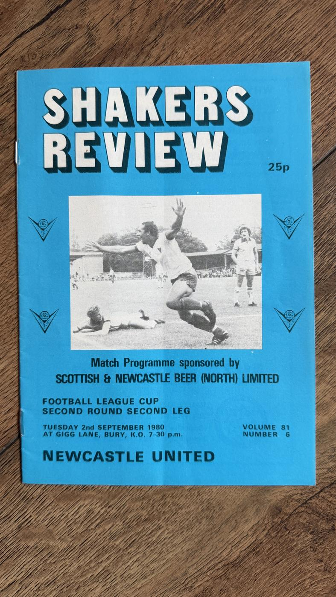
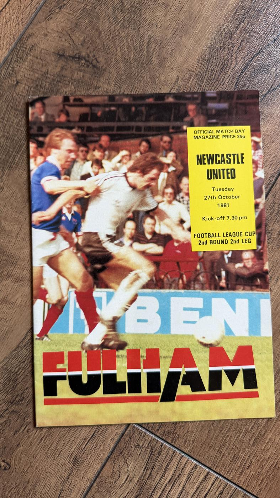
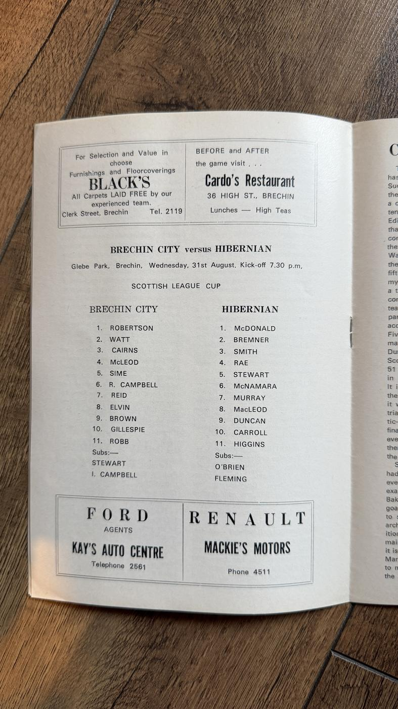
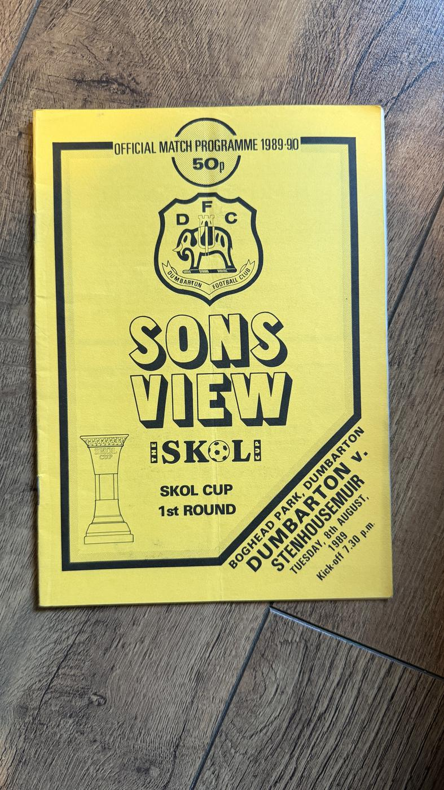

League Cup


FP-0042
Nottingham Forest vs Southampton
£8 open to reasonable offers
Part of a bundle →
Available
Enquire about FP-0042

FP-0043
Norwich City vs Tottenham Hotspur
£3 open to reasonable offers
Available
Enquire about FP-0043

FP-0044
Manchester City vs Newcastle United
£7 open to reasonable offers
Available
Enquire about FP-0044


FP-0085
Brighton & Hove Albion vs Peterborough United
£1.50 open to reasonable offers
Available
Enquire about FP-0085


FP-0113
Carlisle United vs Sheffield Wednesday
£1.50 open to reasonable offers
Available
Enquire about FP-0113


FP-0141
Grimsby Town vs Wolverhampton Wanderers
£1.50 open to reasonable offers
Available
Enquire about FP-0141


FP-0178
Manchester United vs Burnley
£3 open to reasonable offers
Part of a bundle →
Available
Enquire about FP-0178
 2 photos
2 photos
FP-0183
Manchester United vs Stoke City
£3 open to reasonable offers
Part of a bundle →
Available
Enquire about FP-0183

FP-0192
Manchester United vs Crystal Palace
£3 open to reasonable offers
Part of a bundle →
Available
Enquire about FP-0192


FP-0208
Manchester United vs Leicester City
£3 open to reasonable offers
Available
Enquire about FP-0208


FP-0262
Workington vs Sheffield United
£1.50 open to reasonable offers
Available
Workington v Sheffield United, League Cup 2nd Round at Borough Park, 6 September 1972 - the Cumbrian side hosting a big Yorkshire club in a midweek cup tie. Workington were voted out of the Football League five years later, and programmes from their League era are collected precisely because the club's story at that level ended there.
Enquire about FP-0262
FP-0286
West Ham United vs Nottingham Forest
£2.50 open to reasonable offers
Available
Enquire about FP-0286

FP-0336
Newcastle United vs Halifax Town
£3 open to reasonable offers
Available
Enquire about FP-0336

FP-0343
Newcastle United vs Birmingham City
£4.50 open to reasonable offers
Available
Enquire about FP-0343


FP-0377
Newcastle United vs Doncaster Rovers
£3 open to reasonable offers
Available
Enquire about FP-0377


FP-0419
Nottingham Forest vs Oldham Athletic
£3.50 open to reasonable offers
Part of a bundle →
Available
Enquire about FP-0419

FP-0426
Nottingham Forest vs Aston Villa
£3 open to reasonable offers
Available
Enquire about FP-0426

FP-0444
Nottingham Forest vs Watford
£5 open to reasonable offers
Part of a bundle →
Available
Enquire about FP-0444






FP-0641
East Stirlingshire vs Dunfermline Athletic
£1 open to reasonable offers
Available
Enquire about FP-0641

FP-0660
Hamilton Academical vs Aberdeen
£1 open to reasonable offers
Available
Enquire about FP-0660


FP-0704
Raith Rovers vs Forfar Athletic
£1.50 open to reasonable offers
Available
Enquire about FP-0704


FP-0732
Rangers vs Dumbarton
£2.50 open to reasonable offers
Official Rangers programme for the League Cup tie against Dumbarton at Ibrox, Wednesday 11 August 1993. The cover carries a clear autograph in black marker across the top-left, signed over the featured player's image - believed to be a Rangers player of the period, though unidentified and unauthenticated.
Enquire about FP-0732
FP-0744
Rangers vs Queens Park
£2.50 open to reasonable offers
Part of a bundle →
Available
Enquire about FP-0744

FP-0789
Dunfermline Athletic vs Annan Athletic
£1.50 open to reasonable offers
Enquire about FP-0789
FP-0848
Dunfermline Athletic vs St Mirren
£1.50 open to reasonable offers
Available
Enquire about FP-0848


FP-0930
Dunfermline Athletic vs Heart of Midlothian
£1.50 open to reasonable offers
Part of a bundle →
Available
Enquire about FP-0930

FP-0932
Dunfermline Athletic vs Motherwell
£1.50 open to reasonable offers
Part of a bundle →
Available
Enquire about FP-0932


FP-0963
Dunfermline Athletic vs Airdrieonians
£3 open to reasonable offers
Available
Enquire about FP-0963


FP-0969
Hibernian vs Dunfermline Athletic
£3 open to reasonable offers
Available
Enquire about FP-0969

TICKET-0012
Liverpool vs Manchester City
£10 open to reasonable offers
Ticket for the 2016 League Cup Final between Liverpool and Manchester City at Wembley, 28 February 2016 - the final City won on penalties after a 1-1 draw. Crisp and unfolded with vivid colours and no visible wear. Its neighbour, the adjacent seat, is also in this collection (TICKET-0013) if you'd like the pair.
Enquire about TICKET-0012
TICKET-0013
Liverpool vs Manchester City
£10 open to reasonable offers
Ticket for the 2016 League Cup Final between Liverpool and Manchester City at Wembley, 28 February 2016, decided on penalties after a 1-1 draw. This is the adjacent seat to TICKET-0012 in this collection, so the two can be kept together as a matched pair. Crisp, unfolded and showing no visible wear.
Enquire about TICKET-0013

TICKET-0058
Dunfermline Athletic vs Annan Athletic
£1 open to reasonable offers
Enquire about TICKET-0058
TICKET-0076
Heart of Midlothian vs Dunfermline Athletic
£1 open to reasonable offers
Enquire about TICKET-0076
TICKET-0079
Dunfermline Athletic vs Rangers
£10 open to reasonable offers
Ticket stub for Dunfermline Athletic v Rangers in the Coca-Cola Cup Semi-Final, played at Celtic Park on 22 October 1996 - a big neutral-venue night for the Pars against the dominant Rangers side of the nine-in-a-row years. Clean and legible with minor wear.
Enquire about TICKET-0079
TICKET-0080
Dunfermline Athletic vs Celtic
£10 open to reasonable offers
Ticket stub for Dunfermline Athletic v Celtic in the Coca-Cola Cup Semi-Final, played at Ibrox on 14 October 1997 - the Pars at a neutral Ibrox with a place in the final at stake. Clean and legible with minor wear.
Enquire about TICKET-0080
Interested in an item or bundle?
Please email terracearchive@icloud.com, or message me through the Facebook group where you found this catalogue. Include the item ID, for example FP-0042 or MEM-0011. Prices are a guide, not a demand - reasonable offers are welcome. Payment by PayPal or bank transfer once we've agreed a sale. Also open to job-lot offers - the whole collection, all programmes, or any other grouping you'd like - get in touch to discuss.
Please email terracearchive@icloud.com, or message me through the Facebook group where you found this catalogue. Include the item ID, for example FP-0042 or MEM-0011. Prices are a guide, not a demand - reasonable offers are welcome. Payment by PayPal or bank transfer once we've agreed a sale. Also open to job-lot offers - the whole collection, all programmes, or any other grouping you'd like - get in touch to discuss.